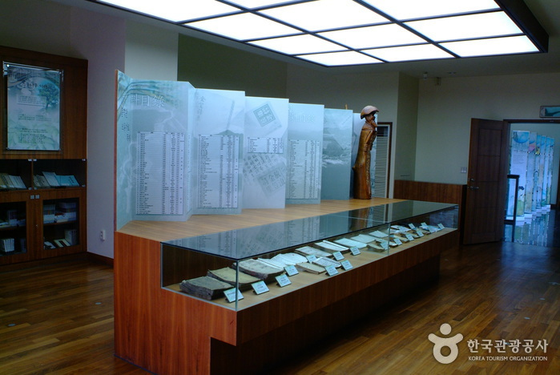
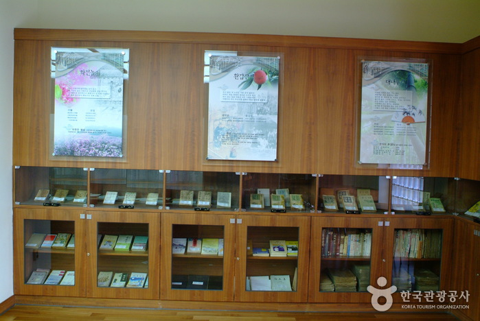

난고 김삿갓 문학관
 
지역 : 강원 영월
설명 : 조선후기의 방랑시인 김삿갓의 정취를 느낄 수 있는 유적지.
웹사이트 링크 1:
http://www.ywmuseum.com/museum/index.do?museum_no=7
웹사이트 링크 2:
https://place.map.kakao.com/10195101
웹사이트 링크 3:
https://www.google.com/maps/place/%EB%82%9C%EA%B3%A0%EA%B9%80%EC%82%BF%EA%B0%93%EB%AC%B8%ED%95%99%EA%B4%80/@37.0796574,128.6014776,18.18z/data=!4m5!3m4!1s0x3563e10d47f49a7b:0xf7b676e15ac5343!8m2!3d37.0794852!4d128.6018265?hl=ko